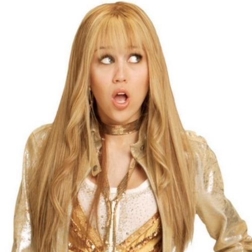

Lilly, Do You Want to Know a Secret?

Lilly får billetter til en Hannah Montana-konsert, men Miley, som i hemmelighet er Hannah Montana, sier at hun ikke kan dra. Etter konserten oppdager Lilly Mileys hemmelighet og vil fortelle alle, men Miley ber henne holde det hemmelig. De krangler, men blir venner igjen når Lilly ikke avslører noe.
Trivia:
- Dette er den første episoden av Hannah Montana
- Over 5,4 millioner seere fulgte med på premieren!
- Navnet på episoden er en referanse til The Beatles sangen,
"Do You Want to Know a Secret?"